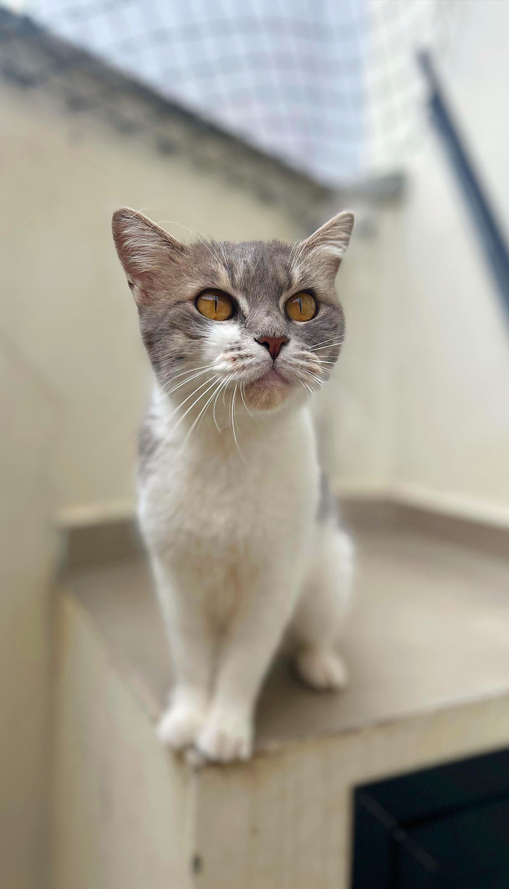

MIMI
Gato | Fêmea | 1 ano | castrado(a) | vacinado(a)
DESCRIÇÃO: Mimi foi abandonada em uma residência, viveu um tempo na rua até ser resgatada. É uma gatinha muito amorosa e carente!
DESCRIÇÃO: Mimi foi abandonada em uma residência, viveu um tempo na rua até ser resgatada. É uma gatinha muito amorosa e carente!